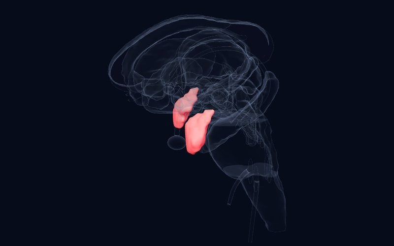

Newsletter · Issue 2 · 16 October 2026
From early trauma to the fear circuit
In this issue we follow the trace of early experience from the brain to the clinic and back down to the cell: trauma leaving its mark somewhere other than where we expect, a comparison of two common treatments for childhood PTSD, a map of emotions evoked by direct stimulation of the human brain, and a cellular account of why fear generalizes.
This week's studies
ASystematic review, meta‑analysisTranslational Psychiatry2026
In psychosis and bipolar disorder, childhood adversity leaves its mark in the prefrontal cortex, not the hippocampus
29 studies, 3,056 patients with psychotic or bipolar disorder (mean age 36.6)
DetailsClose
 Atlas
Atlas
Finding
The hippocampus and amygdala, rich in glucocorticoid receptors, have long been assumed to be the regions most affected by childhood adversity. This review gathered 29 studies (3,056 patients) of childhood adversity and gray matter volume in psychosis and bipolar disorder. Most studies reported a negative association between adversity and gray matter, but it appeared most consistently in prefrontal regions. Meta-analyses of the hippocampus (5 studies) and amygdala (4 studies) found no significant association.
Why it matters
The idea that "trauma shrinks the hippocampus" finds no consistent support in these patient groups; the effect of adversity may be captured more at the cortical level. In the atlas, the long maturation of the prefrontal cortex hints at why it may be so sensitive.
Limitation
Adult patients, high heterogeneity across studies and few studies in the meta-analyses; the result cannot be directly generalized to children.
Petrova T, Tennfjord AØ, Cavero D, et al. Revisiting the link between childhood adversity and stress-sensitive brain regions in psychosis and bipolar disorder: a systematic review and meta-analysis. Translational Psychiatry. 2026. doi:10.1038/s41398-026-04457-w
ASystematic review, meta‑analysisEuropean Journal of Psychotraumatology2026
No clear difference between CBT and EMDR for PTSD in children and adolescents
5 randomized trials, 248 children and adolescents (aged 6–18)
DetailsClose
 Atlas
Atlas
Finding
This meta-analysis pooled five randomized trials (248 participants) directly comparing cognitive behavioral therapy (CBT) with EMDR in trauma-exposed children and adolescents aged 6–18. There was no significant difference between the two treatments in PTSD symptoms, whether reported by the child (SMD 0.18) or by the parent (SMD 0.23). Anxiety symptoms did not differ significantly either. Depressive symptoms, however, were higher in the CBT group than in the EMDR group (SMD 0.44).
Why it matters
It suggests that both treatments keep their place in childhood PTSD, and that co-occurring symptoms, family preference and availability may guide the choice.
Limitation
Very few trials and short follow-up (only one had a 12-month follow-up); the difference in depression should be interpreted with caution.
Meoon I, Khlaisuk A, Nansunanon S, et al. Systematic review and meta-analysis: the effectiveness of cognitive behavioral therapy and eye movement desensitization and reprocessing in children and adolescents. European Journal of Psychotraumatology. 2026. doi:10.1080/20008066.2026.2731855
BSystematic reviewNeuroImage2026
Stimulating emotions in the human brain: negative ones from the mesial temporal lobe, positive ones from the cingulate
34 publications, 2,434 patients with epilepsy, 14,492 stimulations
DetailsClose
 Atlas
Atlas
Finding
Stimulation through depth electrodes implanted before epilepsy surgery (SEEG) is one of the rare ways to test directly how emotion is represented in the human brain. This review gathered 14,492 stimulations in 2,434 patients; only 3% evoked a subjective emotion, and 78% of these emotions were negative. Negative emotions came mostly from mesial and basal temporal regions, while positive emotions came more often than expected from cingulo-frontal and subcortical regions. The insula showed no preferred valence, and there were no significant differences between hemispheres.
Why it matters
These are data that test causally, in humans, the emotion maps derived from animal studies and imaging. In the atlas, the links of the amygdala and the anterior cingulate cortex to different emotional valences can be followed with these findings.
Limitation
The patients have epilepsy and stimulation sites were chosen for clinical reasons; stimulation parameters differ across studies.
Arrighi L, Bartolomei F, Pizzo F. Intracerebral stimulation inducing emotions in SEEG: a systematic review. NeuroImage. 2026. doi:10.1016/j.neuroimage.2026.122288
CAnimal studyNeuropsychopharmacology2026
An inhibitory brake in the amygdala keeps fear from spreading
Lee H et al.
DetailsClose

Atlas
Finding
Telling a threat cue apart from a harmless stimulus is an adaptive skill, yet why this ability varies between individuals is poorly understood. In mice, after auditory fear conditioning, inhibition from parvalbumin-positive interneurons onto fear engram neurons in the lateral amygdala was strengthened, driven by more α1-subunit (Gabra1) GABA-A receptors on the engram neurons. When this inhibition was disrupted, the animals kept their response to the conditioned tone but also froze to new tones, meaning the fear generalized. A transcriptional repressor called ICER reduced Gabra1 expression, limiting this inhibitory plasticity and promoting generalization.
Why it matters
It offers a cellular explanation, and a possible treatment target, for how fear in PTSD spreads from the original trauma cue to similar, harmless stimuli. It may be a biological counterpart of the clinical complaint that "everything triggers me".
Limitation
A study in mice; it has not yet been shown that the same mechanism operates in humans.
Lee H, Lee S, Yoo T, et al. ICER-Controlled inhibitory plasticity of amygdala engram neurons regulates fear memory precision. Neuropsychopharmacology. 2026. doi:10.1038/s41386-026-02568-y
Structure of the week

Brainstem
Medulla Oblongata
Vital centers: breathing rhythm, heart and blood pressure, swallowing and vomiting; the last passage between the brain and the spinal cord.
A question for readers
When a finding shows that trauma does not leave its mark where we expected in the brain, should it change the language we use to explain the effects of trauma to our patients?
You can send your answer by email:
[email protected]References
- Petrova T, Tennfjord AØ, Cavero D, et al. Revisiting the link between childhood adversity and stress-sensitive brain regions in psychosis and bipolar disorder: a systematic review and meta-analysis. Translational Psychiatry. 2026. doi:10.1038/s41398-026-04457-w
- Meoon I, Khlaisuk A, Nansunanon S, et al. Systematic review and meta-analysis: the effectiveness of cognitive behavioral therapy and eye movement desensitization and reprocessing in children and adolescents. European Journal of Psychotraumatology. 2026. doi:10.1080/20008066.2026.2731855
- Arrighi L, Bartolomei F, Pizzo F. Intracerebral stimulation inducing emotions in SEEG: a systematic review. NeuroImage. 2026. doi:10.1016/j.neuroimage.2026.122288
- Lee H, Lee S, Yoo T, et al. ICER-Controlled inhibitory plasticity of amygdala engram neurons regulates fear memory precision. Neuropsychopharmacology. 2026. doi:10.1038/s41386-026-02568-y
This newsletter is for education and is not medical advice; consult your doctor for diagnosis and treatment decisions. The summaries are written in our own words from the studies' abstracts and open-access full texts; see the article itself for details and definitive results.
Level of evidence (as in the atlas): A large consortium, meta-analysis or regulatory decision; B replicated studies or classic case; C single or pioneering study. Preprints have not been peer reviewed.